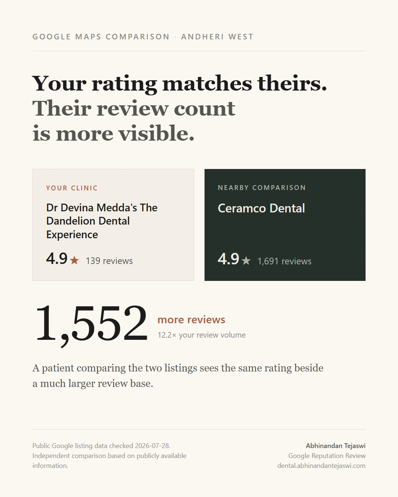

Google Reputation Engine
Turns public review data into a clear reputation gap and action plan.
The problem
Similar star ratings can hide a very different scale of public review evidence.
The build
A public-data comparison that makes the reputation gap legible before deciding what to work on next. This supplied audit compares The Dandelion Dental Experience with Ceramco Dental.
The evidence


How it moves
Compare Diagnose Prioritise
Prototype
An archived public-data snapshot. Figures are not a live feed or a claim of results delivered.